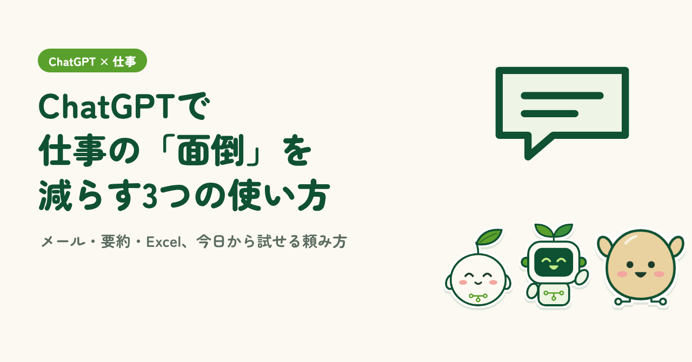
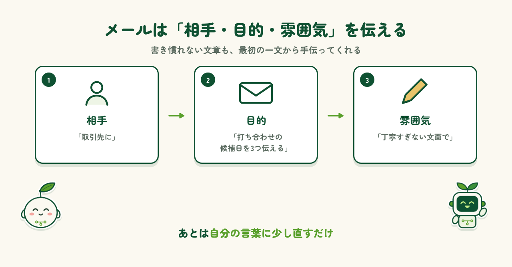
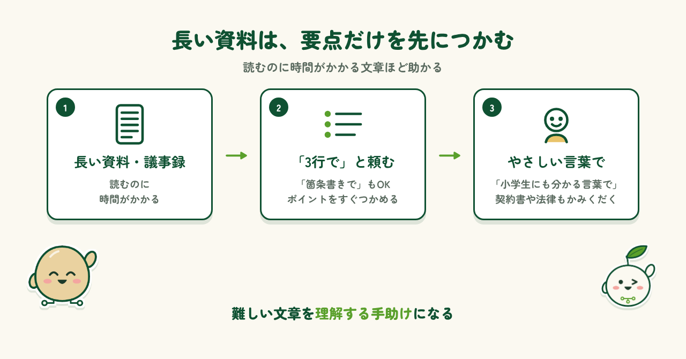
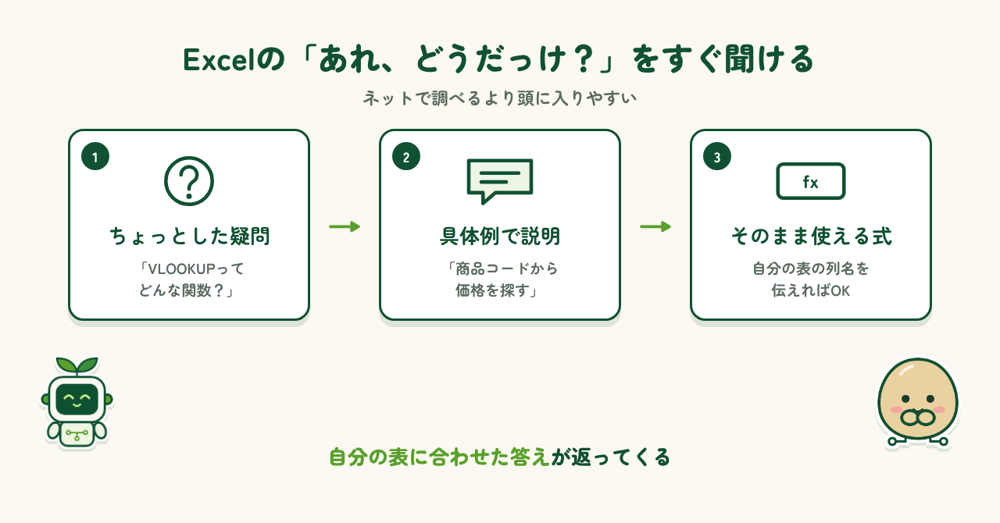
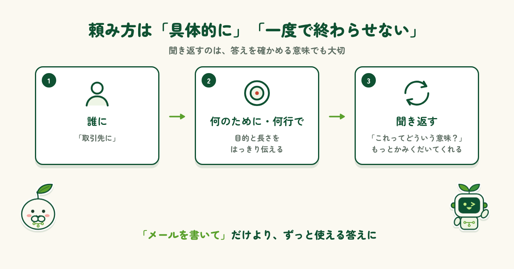
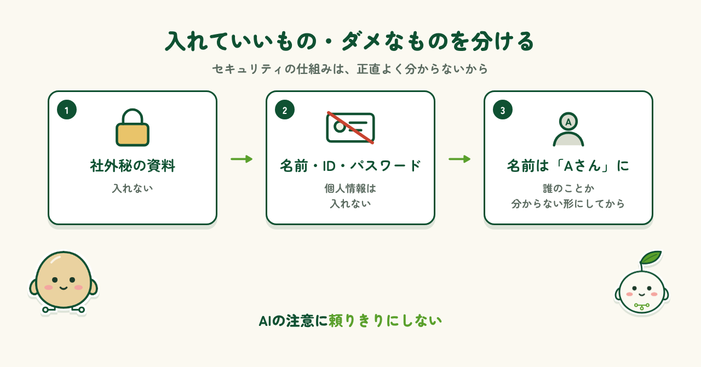

はじめに
「ChatGPTが便利らしい」と聞いて試してみたものの、何を聞けばいいのか分からず、そのまま使わなくなってしまった。そんな人も多いのではないでしょうか。実は、AIがいちばん力を発揮するのは、毎日の仕事の中にある小さな「面倒」です。この記事では、メールや連絡文の下書き、長い資料の要約、Excelの関数や手順の確認という、今日からすぐに試せる3つの使い方を、頼み方の例と一緒に紹介します。
使い方① メールや連絡文の下書き
1つ目は、メールや連絡文の下書きです。初対面の人に送るメールや、お店・会社へのお問い合わせなど、書き慣れない文章は最初の一文から手が止まりがちです。そんなときは「取引先に、打ち合わせの候補日を3つ伝えるメールを、丁寧すぎない文面で書いて」のように、相手・目的・雰囲気を伝えるだけで、すぐに下書きを作ってくれます。あとは自分の言葉に少し直すだけ。ゼロから考えなくていいのは、非常に助かります。

使い方② 長い資料・議事録の要約
2つ目は、長い資料や議事録の要約です。「この文章を3行で」「要点を箇条書きで」と頼めば、読むのに時間がかかる資料も、ポイントだけをすぐにつかめます。さらに便利なのが、契約書や法律のように書きぶりが難しい文章です。「小学生にも分かる言葉で説明して」と頼むと、かみくだいた文章にしてくれるので、内容を理解する手助けになります。

使い方③ Excelの関数や手順を聞く
3つ目は、Excelの関数や手順を聞く使い方です。「VLOOKUPってどんな関数だったっけ？」「ピボットテーブルってどうやって使うんだっけ？」といった、ちょっとした疑問もすぐに聞けます。しかも、「商品コードから価格を探す」のような具体的な例を使って説明してくれるので、ネットで調べるより頭に入りやすいのが助かります。自分の表の列名を伝えれば、そのまま使える式まで作ってくれます。

頼み方のコツ
頼み方のコツは、相手・目的・形を具体的に伝えることです。「メールを書いて」だけより、「誰に」「何のために」「何行くらいで」まで伝えたほうが、ずっと使える答えが返ってきます。もうひとつのコツは、一度で終わらせないこと。分かりにくい答えが返ってきたら、「これってどういう意味？」と聞き返すと、もっとかみくだいて説明してくれます。たまに「先ほどの回答を修正します」と言い直すこともあるので、聞き返すのは答えを確かめる意味でも大切です。

気をつけること
気をつけたいのは、AIに入れる内容です。入力した文章がどこでどう扱われるのか、セキュリティの仕組みは正直よく分かりません。だからこそ、会社の社外秘の資料や、名前・ID・パスワードといった個人情報は入れないようにしています。入力すると「個人情報は書かないでください」と注意してくれるAIもありますが、頼りきりにはできません。どうしても使いたいときは、名前を「Aさん」に置き換えるなど、誰のことか分からない形にしてから頼むと安心です。

まとめ
メールの下書き、長い文章の要約、Excelの関数の確認。どれも、これまで時間がかかっていた小さな「面倒」ですが、ChatGPTに聞けばすぐに手伝ってもらえます。最初から上手に頼もうとしなくても大丈夫です。気軽に聞いて、返ってきた回答を見ながら、分からないところは聞き返し、一緒に考えていく。それがいちばんのコツだと思います。まずは今日の仕事の中から、ひとつ試してみてはいかがでしょうか。
制作メモ
段落の構成と文章の下書きはAI（Claude）と作り、各段落に自分の感想を入れて、1段落ずつ確認・修正しました。